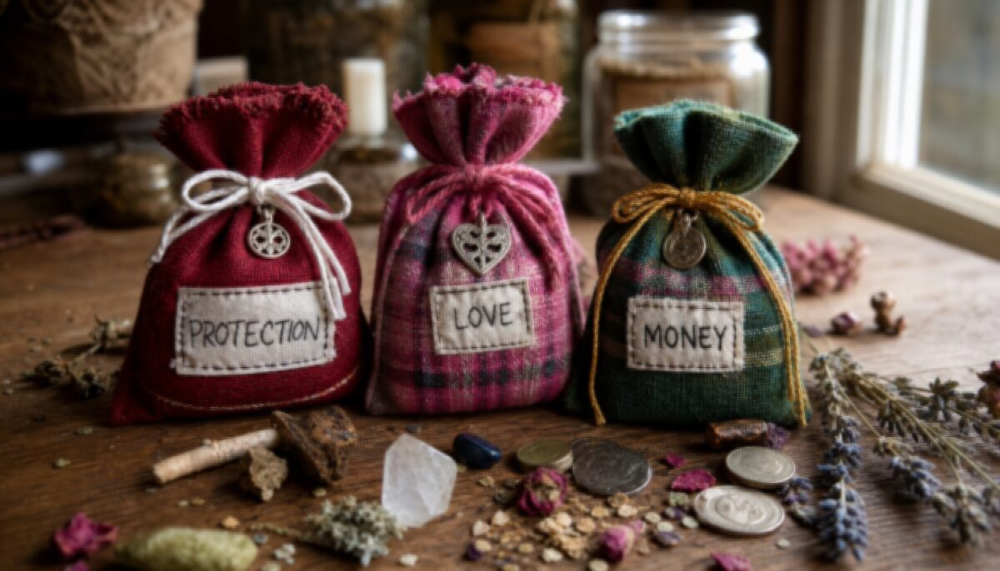

Mojo Bags
个人力量的可携带容器

Mojo Bag（也称 conjure bag、root bag、hand）是一个装填了草药、根茎、水晶、硬币等物品的小布包，由实践者亲手制作并"活化"后随身携带。
核心原则
- 亲手制作——力量来自制作过程中的意图
- 法兰绒布——红（保护）、绿（财富）、粉（爱情）、黑（吸收）
- 九的讲究——九种成分、打九个结
- 喂养——每周滴几滴魔法油或威士忌
- 不可示人——被看见或触摸会减弱力量
保护 Mojo
成分：High John 根 · 龙血树脂 · 圣约翰草 · 黑曜石 · 海盐 · 磁铁
制作：月亏期间操作。红色法兰绒布包好，打九个结，每结念 Psalm 23。滴烈酒喂袋。贴身携带三天。
爱情 Mojo
成分：玫瑰花瓣 · 薰衣草 · 肉桂棒 · 蜂蜜 · 粉水晶
制作：周五（金星日）月相上升操作。粉色法兰绒布。滴玫瑰精油。放枕头下三夜后随身携带。
伦理提醒：传统 Hoodoo 不建议操控他人自由意志。爱情 Mojo 的焦点应是"向自己敞开爱的通道"。
财富 Mojo
成分：High John 根 · 金钱草 · 肉桂 · 五枚不同面值硬币 · 黄铁矿
制作：周四（木星日）月相上升操作。硬币叠放金线绕三圈。绿色法兰绒布。系九个结。首夜放钱包中过夜。
好运与赌博 Mojo
基础赌博魔乔袋 · Basic Gambling Mojo Bag
为踏入赌局或竞逐前随身携带，聚集好运、招财。
材料
- 一只红色小布袋
- 红色麻绳
- 一小撮常胜约翰根粉（John the Conqueror）
- 刻有你的姓名首字母的一枚硬币
- 一对磁石（male & female lodestone）
- 磁砂（magnetic sand）
- 将一雄一雌两块磁石放入袋中。
- 加入一小撮磁砂，并"充能"磁石，念："喂养他，喂养她。"
- 加入常胜约翰根粉与刻字的硬币。
- 用红麻绳封口，专注你的好运。
- 感恩"此事已成"。赌博时贴身装入衣袋。
变体 1：基础袋中再加五指草（Five Finger Grass）、幸运手根（Lucky Hand Root）与鳄鱼足，入局前以古龙水喂养布袋。
变体 2：基础袋中再加五指草、肉桂片、丁香与三颗魔乔豆。
运气增强油
速运油 · Fast Luck Oil
用于商业招客、招财或赌博，可涂抹门槛、入祭坛或喂养魔乔袋。
材料
- 基底油 2 盎司（杏仁/鳄梨/甜杏仁/甘油）
- 香茅油 2 汤匙
- 将基底油放入陶碗。
- 滴入香茅油，旋搅混匀，装入窄颈瓶。
- 用于招财：擦洗门口吸引顾客；用于魔乔：作为喂养袋油。
红速运油 · Red Fast Luck Oil
以肉桂与香草调制的热运油，用于清净开路、护送一天好运。
材料
- 基底油 2 盎司
- 肉桂精油 2 汤匙
- 香草精油 2 汤匙
- 将基底油放入陶碗。
- 滴入肉桂与香草油，旋搅混匀，装入窄颈瓶。
- 用以擦拭鞋底，清出一条好运之路；或掺入擦洗液中，清洗前后门。
喂养与维护
- 每周喂养一次，新月/满月日尤佳
- 喂养物：魔法油、威士忌、或自己的唾液
- 掉落或被触碰——力量被重置
- 目标达成后：感谢袋子，拆开将材料埋入土壤